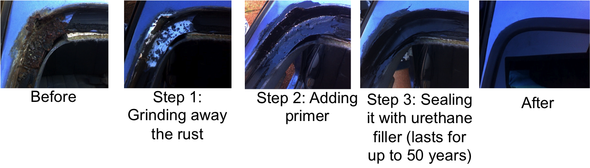

Pacific Windshields not only offers the unique service of traveling to you, but on top of that, we offer rust repair around a windshield’s perimeter. This can crucial because rust is often responsible for cracking a windshield. Additionally, rust may allow water into the vehicle. Over the past twenty-five years, we have completed thousands of rust repairs.
In most cases, Pacific Windshields offers a one-year written warranty on our rust work. However, in rare situations the rust may be too serious for us to repair. In order to give an accurate quote, we must first remove the windshield to judge the serverity of the rust. Pacific Windshields is well-known to charge significantly less than body and repair shops for rustwork.
